Um clube de estudos sobre amor, vida e as relações que a gente constrói.
Quero entrarTema e leitura em breve.
Todo mês eu escolho algo que estou estudando — uma questão da clínica, uma pergunta da vida, um livro que não me larga — e transformo numa aula.
A aula vem com uma leitura: um conto, uma crônica, um capítulo. Eu conto o que aprendi, a literatura atravessa a conversa, e o estudo continua com quem estudou junto.
por que 03
Toda relação tem três histórias: a de cada pessoa e a que se constrói entre elas.
E todo mundo precisa de um terceiro lugar, além da casa e do trabalho, para pensar a vida com calma. O clube quer ser esse lugar.
Cada aula vira uma capa. Quem assina tem acesso a todas, desde o primeiro dia.
arraste para o lado
Para psicólogas e psicólogos que gostam de estudar sem fórmula pronta e querem levar para o consultório mais do que técnica.
E para qualquer pessoa curiosa sobre o amor e a vida, mesmo sem ser da área.
R$49/mês
Todas as aulas, a leitura do mês e a comunidade, enquanto você assinar. Cancele quando quiser.
Quero assinarSim. De vez em quando entram termos clínicos e técnicos, mas é uma conversa que interessa a todo mundo.
Então não coloque mais uma coisa na sua vida. Se quiser, arrume tempo: tire outra coisa daí. Eu vou estar lá.
A ideia é ser mais do que um curso: um lugar para exercitar, pensar a vida e as nossas relações. Eu acharia triste você assinar e não assistir. E, se você não vai assistir, tem todo o motivo para não assinar.
A gravação entra no acervo, e você assiste quando puder.
Sim, a pedido, por um formulário.
Pela própria Hotmart, quando quiser. O acesso vale enquanto a assinatura estiver ativa.
Francisco Ilo, psicólogo (CRP 11/17085), especialista em Terapia de Aceitação e Compromisso, com formação em Psicoterapia Analítica Funcional e em Terapia Comportamental Integrativa de Casais. Atende pessoas e relacionamentos e dá aulas em formações de psicoterapia.